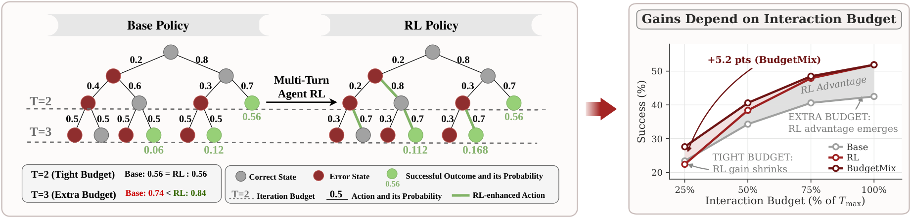
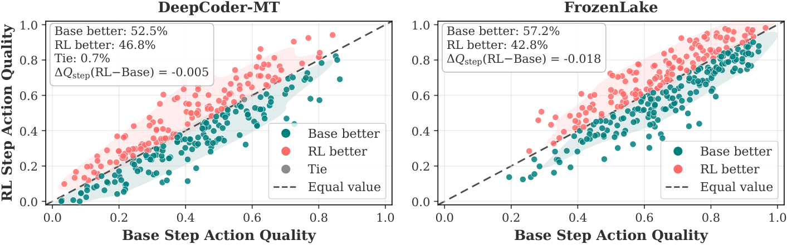
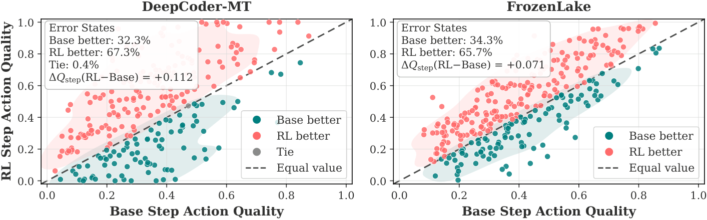
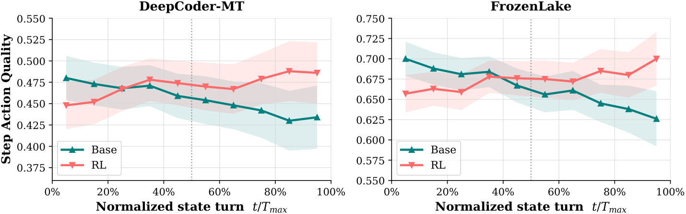
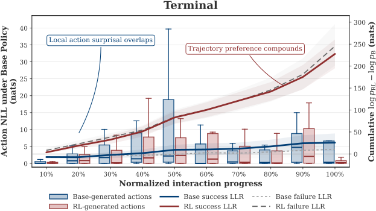
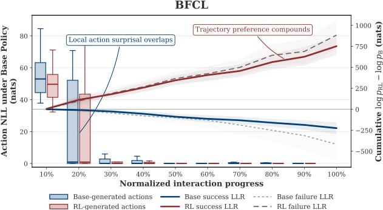
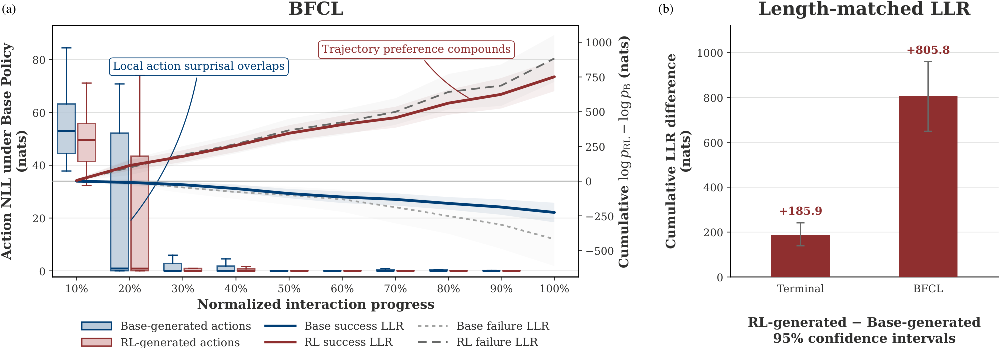
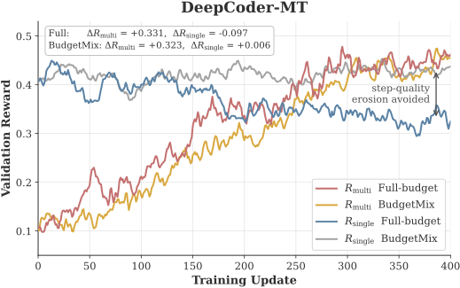
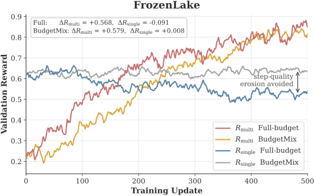
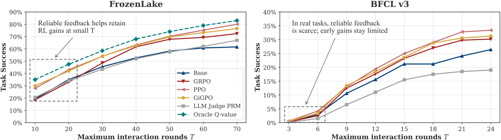

No consistent single-step improvement
States where RL achieves better action quality:
46.8%DeepCoder-MT
42.8%FrozenLake
Rethinking Agentic RL / Research overview
Budget-dependent gains; stronger error recovery and long-horizon resilience.
Paper and code links will be added upon release.
Explore the findingsWhile multi-turn agentic reinforcement learning (RL) excels on long-horizon tasks, its performance gains remain highly sensitive to interaction constraints. Evaluating across sampling breadth K and interaction depth T via Pass@(K,T) , we show that trajectory-level RL advantages depend on sufficient turn budgets, diminishing significantly when budgets tighten. Besides, agentic RL does not uniformly elevate single-step decision quality; rather, its strength concentrates in error recovery and long-horizon resilience. To mitigate the deployment risks caused by this budget dependence, we provide a preliminary discussion on the benefits and limitations of process supervision signals and introduce BudgetMix RL as an alternative that varies interaction budgets during training. Experiments demonstrate that BudgetMix RL achieves robust performance across diverse execution settings.

Unlike single-turn RL, multi-turn agentic RL can surpass the base model’s empirical Pass@K capability boundary.
01BPass@TThe RL advantage can diminish or reverse when the interaction budget tightens.
02Step-level action qualityAdvantages may concentrate in error recovery and long-horizon resilience.
03Mechanism analysisLikelihood analysis and training dynamics examine the sources of trajectory-level gains.
04Preliminary discussionA preliminary discussion of process supervision signals and BudgetMix RL for more robust agent performance.
Pass@(K, T) evaluates the probability that at least one of K sampled trajectories succeeds within T interaction turns.
Number of sampled trajectories K
Maximum interaction turns T
Figures 2 & 3 · Original paper curves. Shaded regions indicate the performance gap.
GRPO is the primary RL algorithm. Pass@K sweeps sampling breadth; Pass@T fixes K = 8 and varies the maximum interaction turns. Under tight budgets, substantial headroom can remain below the structural performance upper bound (Appendix B.3).
No consistent improvement in single-step action quality.
Multi-turn agentic RL does not consistently improve single-step action quality. Its advantages may instead concentrate in error recovery and long-horizon resilience.
States where RL achieves better action quality:
Error states where RL selects the superior action:
RL shows little advantage early in execution. Its step-level advantage becomes more pronounced later in long-horizon trajectories.
Later interaction reveals the RL advantage.



Qwen3-4B · GRPO · Figures 4–6. Percentages compare action quality on matched states and error states.
We independently sample 16 actions from each policy at the same state. FrozenLake uses exact Q* values from finite-horizon dynamic programming (γ = 0.95); DeepCoder-MT uses unit-test pass rates. Intermediate states are sampled equally from base and RL trajectories. Error states are constructed by injecting an incorrect action at the preceding step.
Continuing from identical error states, terminal success is higher for RL: 51.3% vs. 38.6% on FrozenLake and 38.5% vs. 22.9% on DeepCoder-MT.
Log-likelihood analysis and training dynamics examine the sources of trajectory-level gains.
RL-generated actions remain locally plausible under the base policy, yet complete RL trajectories receive substantially higher likelihood under the RL policy. This suggests that multi-turn RL may improve how reliably the model composes locally plausible actions into long-horizon trajectories.
Keeping histories fixed, ActionNLL measures action surprisal under the base policy. The cumulative log-likelihood ratio (LLR) compares the RL and base policies over complete responses, including reasoning and action tokens.


BFCL shows a consistent pattern: similar action likelihoods under the base policy, alongside a substantial policy shift over complete trajectories. Length-matched comparisons further examine the influence of output length.

As standard multi-turn RL training proceeds, the trajectory-level reward Rmulti keeps rising, while the step-level reward Rsingle does not improve and can gradually decline. Trajectory-level gains can develop alongside declining step-level action quality.
On DeepCoder-MT, Rmulti increases by 0.331 while Rsingle drops by 0.097.
FrozenLake exhibits the same pattern under standard RL: trajectory-level reward increases while single-step action quality tends to decline. With BudgetMix RL, step-level quality remains stable or improves slightly.


We discuss potential mitigation strategies to preserve long-horizon execution and trajectory-level gains while reducing reliance on extra interaction budgets: process supervision signals and BudgetMix RL.
Process supervision signals · §5.1
Finer-grained signals can improve per-step action quality through process rewards or credit assignment. Their benefits depend on the quality of the available supervision.
Oracle Q-value process rewards and GiGPO stabilize performance across interaction budgets, especially under tight budgets.
Without an exact step-level oracle, GiGPO and PPO fail to improve performance under constrained budgets and perform similarly to GRPO.

High-quality process rewards can alleviate budget reliance, but acquiring such supervision remains impractical for most real-world applications.
BudgetMix RL · §5.2
BudgetMix RL keeps the same reward mechanism and varies the interaction budget across training trajectories. It can be combined with GRPO, PPO, and GiGPO.
Construct candidate budgets at 10% intervals, round up to whole turns, remove duplicates, and sample uniformly. All rollouts in a task group share the same budget.
10% increments → Tmax
Average improvement over full-budget RL
at 25% of Tmax
at 50% of Tmax
at 75% of Tmax
§5.4 · Reported averages across four tasks, two model sizes, and three RL algorithms.
BudgetMix largely mitigates local decision-quality degradation while preserving long-horizon gains.
Pass@T evaluation results (Pass@8, %). Bold and underlined values mark the best and second-best results within each model size, task, and budget. Avg. gain compares BudgetMix with full-budget RL across GRPO, GiGPO, and PPO.
| FrozenLake (Tmax=70) | DeepCoder-MT (Tmax=10) | BFCL-v3 (Tmax=24) | InterCode-SQL (Tmax=10) | ||||||||||||||
|---|---|---|---|---|---|---|---|---|---|---|---|---|---|---|---|---|---|
| Method | 25% | 50% | 75% | 100% | 25% | 50% | 75% | 100% | 25% | 50% | 75% | 100% | 25% | 50% | 75% | 100% | Avg. |
| Qwen3-4B | |||||||||||||||||
| Base | 30.3 | 49.1 | 58.7 | 61.6 | 34.0 | 43.5 | 47.3 | 48.3 | 3.0 | 15.6 | 21.2 | 26.4 | 23.1 | 28.8 | 31.8 | 33.5 | 34.8 |
| GRPO Full | 28.7 | 55.1 | 68.1 | 72.4 | 29.2 | 48.0 | 56.0 | 59.0 | 2.5 | 17.6 | 27.0 | 30.2 | 23.1 | 32.2 | 37.4 | 46.0 | 39.5 |
| GRPO BudgetMix | 37.6 | 61.1 | 72.0 | 73.5 | 38.1 | 54.3 | 60.5 | 61.2 | 8.5 | 23.0 | 30.5 | 30.8 | 28.9 | 37.7 | 42.9 | 47.5 | 44.3 |
| GiGPO Full | 38.4 | 58.4 | 70.4 | 76.5 | 28.8 | 48.3 | 55.6 | 58.8 | 3.4 | 18.4 | 28.8 | 31.3 | 23.4 | 31.5 | 37.5 | 45.0 | 40.9 |
| GiGPO BudgetMix | 46.3 | 63.5 | 74.0 | 78.5 | 36.5 | 52.0 | 59.3 | 59.5 | 8.5 | 23.2 | 31.7 | 33.0 | 27.9 | 37.0 | 41.7 | 44.8 | 44.8 |
| PPO Full | 38.5 | 58.6 | 71.2 | 80.0 | 29.5 | 45.6 | 51.6 | 55.0 | 4.2 | 19.4 | 29.0 | 33.4 | 22.4 | 30.6 | 34.8 | 41.0 | 40.3 |
| PPO BudgetMix | 45.5 | 63.1 | 75.1 | 80.3 | 36.4 | 51.6 | 55.5 | 56.9 | 10.2 | 24.8 | 32.8 | 34.5 | 27.0 | 35.2 | 38.3 | 42.7 | 44.4 |
| Avg. gain | +7.9 | +5.2 | +3.8 | +1.1 | +7.8 | +5.3 | +4.0 | +1.6 | +5.7 | +5.2 | +3.4 | +1.1 | +5.0 | +5.2 | +4.4 | +1.0 | +4.2 |
| Qwen3-8B | |||||||||||||||||
| Base | 34.0 | 49.5 | 52.7 | 58.5 | 42.8 | 51.6 | 54.6 | 56.8 | 4.8 | 23.2 | 29.4 | 37.8 | 29.8 | 34.9 | 37.6 | 40.8 | 39.9 |
| GRPO Full | 31.9 | 58.8 | 68.5 | 78.0 | 31.5 | 54.5 | 60.8 | 66.5 | 3.8 | 27.5 | 39.0 | 45.0 | 27.0 | 40.5 | 45.7 | 49.4 | 45.5 |
| GRPO BudgetMix | 40.8 | 65.1 | 72.9 | 79.6 | 45.5 | 59.8 | 64.6 | 66.8 | 10.5 | 33.0 | 43.2 | 47.2 | 33.1 | 46.5 | 50.4 | 50.4 | 50.6 |
| GiGPO Full | 34.6 | 56.5 | 65.5 | 71.5 | 28.7 | 48.2 | 55.7 | 58.7 | 5.6 | 26.8 | 38.8 | 43.5 | 22.8 | 32.9 | 36.1 | 45.6 | 42.0 |
| GiGPO BudgetMix | 40.9 | 60.4 | 69.1 | 72.3 | 44.9 | 57.8 | 60.1 | 60.7 | 10.8 | 30.8 | 42.8 | 43.2 | 32.6 | 39.4 | 40.2 | 47.7 | 47.1 |
| PPO Full | 40.4 | 63.5 | 71.2 | 85.0 | 34.5 | 51.5 | 57.0 | 64.8 | 7.0 | 29.5 | 41.5 | 48.0 | 26.5 | 36.0 | 40.8 | 45.0 | 46.4 |
| PPO BudgetMix | 47.1 | 67.4 | 75.2 | 86.7 | 44.0 | 56.6 | 61.1 | 65.9 | 12.2 | 34.2 | 46.0 | 50.5 | 32.1 | 40.0 | 44.5 | 46.6 | 50.6 |
| Avg. gain | +7.3 | +4.7 | +4.0 | +1.4 | +13.2 | +6.7 | +4.1 | +1.1 | +5.7 | +4.7 | +4.2 | +1.5 | +7.2 | +5.5 | +4.2 | +1.6 | +4.8 |
Total and remaining budgets are provided in the prompt. Trajectories that exceed their budget without completion receive zero reward. Evaluation uses 25%, 50%, 75%, and 100% of Tmax.